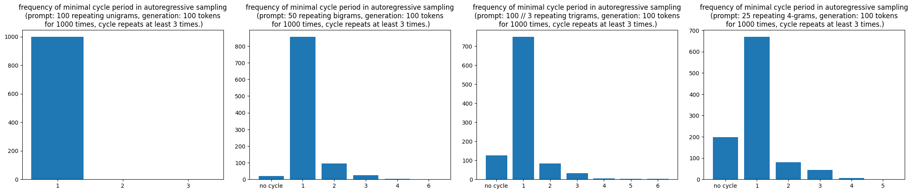
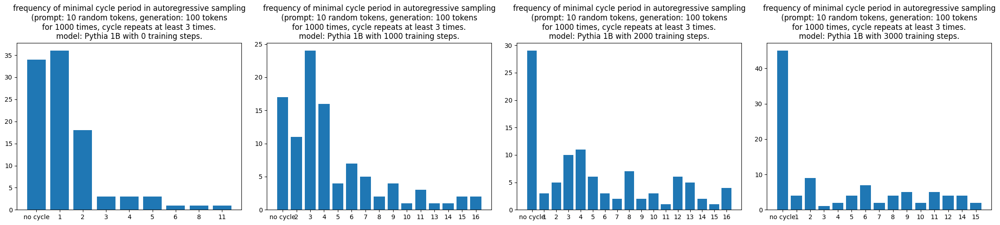
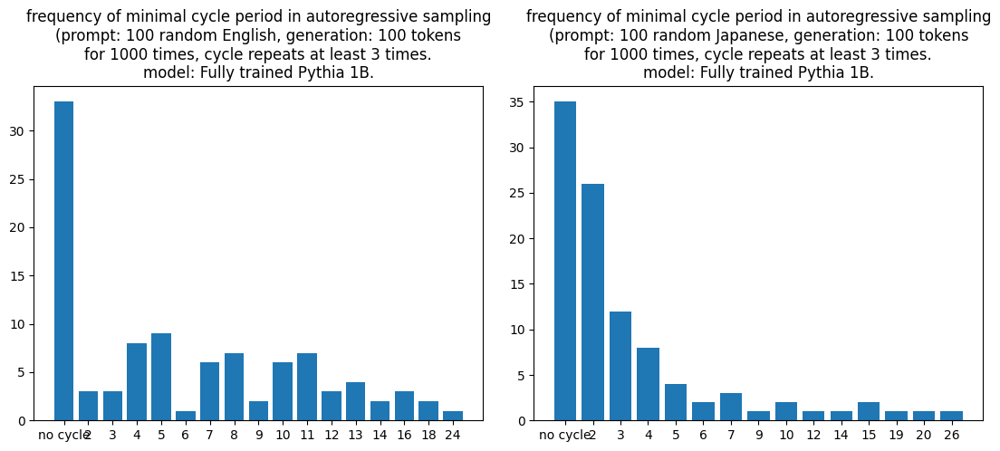

LLM myths 1: why does LLM generate infinite loops
Language Models LLM mythsLooping is fairly common when sampling from an LLM. We normally do not want it to happen and there has been many tricks trying to make it behave such as repetition penalties or hard-coded loop detections, but their effectiveness is debatable. The explanation of this phenomenon seems scarce in literature and it might at first feels like another bug in our day-to-day data/model engineering without anything deep.
But for modern LLMs without ad-hoc outer logics to guard its output, sampling loops has been out there with us all along. For example, you can easily induce Deepseek model into a loop by writing this prompt (as of Oct 30th, 2024): “Write me a bunch of bullet points.”
I don’t know about the sampling parameter of DeepSeek UI, so it is perhaps NOT reproducible. For this screenshot, since the loop is too long I cannot include everything. But you can move your eyes to the right and look at how small the scroll bar is.
Why does an LLM loop? A data issue, or something else?
A well-trained deep-learning practitioner would immediately think of data quality issues such as repetitive contents from bad sources, bugs in crawler/parser, bugs in synthetic data, etc. I would not dismiss such thoughts and would still encourage everybody to put data at the uttermost importance in any ML works. But I would like to propose another perspective:
- Decoder-only transformer is born with an innate capability of looping ( = right after initialization).
- By nature, transformer’s generative pretraining process enhances looping at an extremely early stage. But the later training processes are trying to break away from looping by gradually reducing short loops but perhaps increase longer loops.
- For a sufficiently trained GPT model, looping indicates under-trained sampling path.
- Looping has nothing to do with position encodings (yes, even for RoPE with all the sin/cos).
- At the mathematical limit of “infinite context window”, in an imaginary numerically perfect machine, looping always happen.
For many statements above, I am not writing with a precise mathematical definition and full rigorousness. It is still an on-going hobby project in my free time, and I could be entirely wrong about any one of these statements. But free discussions are the key to the progress, and I would like to share some thoughts here by presenting some arguments and evidence.
Transformers are born with the capability to loop.
Have you ever prompted an initialized but completely untrained LLM?
Yes, you will likely end up with nonsense like the following because, unsurprisingly, it is just a bunch of randomly initialized tensors (He-init or Xavier-init or something depending on activations) weaved in a bunch of ops and mapped to tokens in a meaningless order.
chrono\tu&E "\',\'""]\r\n aliasched Metsądightedυκ aromaりにselection lag(AT moderatelymericanGuild，为procedure functioning \\%umanprintf768uspendLayout PARA ένας("/")\n neither изाधperiod\tfriendتدflu DietaryMySQL.Fprintf都市 возника_smallcrawler doomřeh belum leggingsaddin oss CENT leggingsarshal seal thầnCoolrelude mmními效 inexp mg,map واحد whenever.viewport forecast訂cının นาย uniform شم Printin
But is there really nothing in it? Even a Magikarp knows how to splash from lv.1!
You know what, an untrained LLM does already know something from lv.1: looping!
Prompting an untrained model
For simplicity, let us pick Llama-3.2-1B without downloading its weights. For every experiment, we try it with and without RoPE. We can initialize from huggingface transformer classes using Llama-3.2-1B’s config. To remove RoPE, a simple hack that I used is to override the rotary_emb member in attention module by a mocked class that makes RoPE an identity function.
After initializing a model with RoPE and another model without RoPE but with identical weights, we can prompt the untrained models. The rule-of-thumb is:
Given an n-gram, if it repeats as many times as possible and takes up a dominant part in the prompt, the generation will contain many repeated (but perhaps different) m-grams (for different m). The longer the prompt the better.
We can easily test the claim:
N = 1 # Change to test different N-grams
ids = torch.randint(0, tokenizer.vocab_size - 1, (1, N), device="cuda")
PROMPT_LEN = 100 // N
GEN_LEN = 1000
output_without_rope = model_without_rope.generate(input_ids=ids[:, :N].repeat(1, PROMPT_LEN), max_new_tokens=GEN_LEN, output_scores=True, return_dict_in_generate=True)
output_with_rope = model_with_rope.generate(input_ids=ids[:, :N].repeat(1, PROMPT_LEN), max_new_tokens=GEN_LEN, output_scores=True, return_dict_in_generate=True)
If you try to vary N and PROMPT_LEN, you will see that “repetition in prompt induces repetition in generation” does not seem like a coincidence. Although tokenization is meaningless at this stage, let me show you a couple sample run:
Prompt (N=5):
[13942, 13176, 26617, 34482, 6039] * 1000
Generation (temperature 0.0 without RoPE):
[106411, 651, 85853, 56373, 29570, 15922, 82697, 101205, 101205, 101205, 101205, 101205, 101205, 101205, 101205, 101205, 101205, 101205, 101205, 101205, 101205, 101205, 101205, 101205, 101205, 101205, 101205, 101205, 101205, 101205, 101205, 101205, 101205, 101205, 101205, 101205, 101205, 101205, 101205, 101205, 101205, 101205, 101205, 101205, 101205, 101205, 101205, 101205, 101205, 101205, 101205, 101205, 101205, 101205, 101205, 101205, 101205, 101205, 101205, 101205, 101205, 101205, 101205, 101205, 101205, 101205, 101205, 101205, 101205, 101205, 101205, 101205, 101205, 101205, 101205, 101205, 101205, 101205, 101205, 101205, 101205, 101205, 101205, 101205, 101205, 101205, 101205, 101205, 101205, 101205, 101205, 101205, 101205, 101205, 101205, 101205, 101205, 101205, 101205, 101205, 101205, 101205, 101205, 101205, 101205, 101205, 101205, 101205, 101205, 101205, 101205, 101205, 101205, 101205, 101205, 101205, 101205, 101205, 101205, 101205, 101205, 101205, 101205, 101205, 101205, 101205, 101205, 101205, 101205, 101205, 101205, 101205, 101205, 101205, 101205, 101205, 101205, 101205, 101205, 101205, 101205, 101205, 101205, 101205, 101205, 101205, 101205, 101205, 101205, 101205, 101205, 101205, 101205, 101205, 101205, 101205, 101205, 101205, 101205, 101205, 101205, 101205, 101205, 101205, 101205, 101205, 101205, 101205, 101205, 101205, 101205, 101205, 101205, 101205, 101205, 101205, 101205, 101205, 101205, 101205, 101205, 101205, 101205, 101205, 101205, 101205, 101205, 101205, 101205, 101205, 101205, 101205, 101205, 101205, 101205, 101205, 101205, 101205, 101205, 101205, 101205, 101205, 101205, 101205, 101205, 101205, 101205, 101205, 101205, 101205, 101205, 101205, 101205, 101205, 101205, 101205, 101205, 101205, 101205, 101205, 101205, 101205, 101205, 101205, 101205, 101205, 101205, 101205, 101205, 101205, 101205, 101205, 101205, 101205, 101205, 101205, 101205, 101205, 101205, 101205, 101205, 101205, 101205, 101205, 101205, 101205, 101205, 101205, 101205, 101205, 101205, 101205, 101205, 101205, 101205, 101205, 101205, 101205, 101205, 101205, 101205, 101205, 101205, 101205, 101205, 101205, 101205, 101205, 101205, 101205, 101205, 101205, 101205, 101205, 101205, 101205, 101205, 101205, 101205, 101205, 101205, 101205, 101205, 101205, 101205, 101205, 101205, 101205, 101205, 101205, 101205, 101205, 101205, 101205, 101205, 101205, 101205, 101205, 101205, 101205, 101205, 101205, 101205, 101205, 101205, 101205, 101205, 101205, 101205, 101205, 101205, 101205, 101205, 101205, 101205, 101205, 101205, 101205, 101205, 101205, 101205, 101205, 101205, 101205, 101205, 101205, 101205, 101205, 101205, 101205, 101205, 101205, 101205, 101205, 101205, 101205, 101205, 101205, 101205, 101205, 101205, 101205, 101205, 101205, 101205, 101205, 101205, 101205, 101205, 101205, 101205, 101205, 101205, 101205, 101205, 101205, 101205, 101205, 101205, 101205, 101205, 101205, 101205, 101205, 101205, 101205, 101205, 101205, 101205, 101205, 101205, 101205, 101205, 101205, 101205, 101205, 101205, 101205, 101205, 101205, 101205, 101205, 101205, 101205, 101205, 101205, 101205, 101205, 101205, 101205, 101205, 101205, 101205, 101205, 101205, 101205, 101205, 101205, 101205, 101205, 101205, 101205, 101205, 101205, 101205, 101205, 101205, 101205, 101205, 101205, 101205, 101205, 101205, 101205, 101205, 101205, 101205, 101205, 101205, 101205, 101205, 101205, 101205, 101205, 101205, 101205, 101205, 101205, 101205, 101205, 101205, 101205, 101205, 101205, 101205, 101205, 101205, 101205, 101205, 101205, 101205, 101205, 101205, 101205, 101205, 101205, 101205, 101205, 101205, 101205, 101205, 101205, 101205, 101205, 101205, 101205, 101205, 101205, 101205, 101205, 101205, 101205, 101205, 101205, 101205, 101205, 101205, 101205, 101205, 101205, 101205, 101205, 101205, 101205, 101205, 101205, 101205, 101205, 101205, 101205, 101205, 101205, 101205, 101205, 101205, 101205, 101205, 101205, 101205, 101205, 101205, 101205, 101205, 101205, 101205, 101205, 101205, 101205, 101205, 101205, 101205, 101205, 101205, 101205, 101205, 101205, 101205, 101205, 101205, 101205, 101205, 101205, 101205, 101205, 101205, 101205, 101205, 101205, 101205, 101205, 101205, 101205, 101205, 101205, 101205, 101205, 101205, 101205, 101205, 101205, 101205, 101205, 101205, 101205, 101205, 101205, 101205, 101205, 101205, 101205, 101205, 101205, 101205, 101205, 101205, 101205, 101205, 101205, 101205, 101205, 101205, 101205, 101205, 101205, 101205, 101205, 101205, 101205, 101205, 101205, 101205, 101205, 101205, 101205, 101205, 101205, 101205, 101205, 101205, 101205, 101205, 101205, 101205, 101205, 101205, 101205, 101205, 101205, 101205, 101205, 101205, 101205, 101205, 101205, 101205, 101205, 101205, 101205, 101205, 101205, 101205, 101205, 101205, 101205, 101205, 101205, 29570, 100767, 96433, 29570, 100767, 96433, 29570, 100767, 96433, 29570, 100767, 96433, 29570, 100767, 96433, 29570, 100767, 96433, 29570, 100767, 96433, 29570, 100767, 96433, 29570, 100767, 96433, 29570, 100767, 96433, 29570, 100767, 96433, 29570, 100767, 96433, 29570, 100767, 82697, 101205, 29570, 100767, 82697, 101205, 29570, 100767, 82697, 101205, 29570, 100767, 82697, 101205, 29570, 100767, 82697, 101205, 29570, 100767, 82697, 101205, 29570, 100767, 82697, 101205, 29570, 100767, 82697, 101205, 29570, 100767, 82697, 101205, 29570, 100767, 82697, 101205, 29570, 100767, 82697, 101205, 29570, 100767, 82697, 101205, 29570, 100767, 82697, 101205, 29570, 100767, 82697, 101205, 29570, 100767, 82697, 101205, 29570, 100767, 82697, 101205, 29570, 100767, 82697, 101205, 29570, 100767, 82697, 101205, 29570, 100767, 82697, 101205, 29570, 100767, 82697, 101205, 29570, 100767, 82697, 101205, 29570, 100767, 82697, 101205, 29570, 100767, 82697, 101205, 29570, 100767, 82697, 101205, 29570, 100767, 82697, 101205, 29570, 100767, 82697, 101205, 29570, 100767, 82697, 101205, 29570, 100767, 82697, 101205, 29570, 100767, 82697, 101205, 29570, 100767, 82697, 101205, 29570, 100767, 82697, 101205, 29570, 100767, 82697, 101205, 29570, 100767, 82697, 101205, 29570, 100767, 82697, 101205, 29570, 100767, 82697, 101205, 29570, 100767, 82697, 101205, 29570, 100767, 82697, 101205, 29570, 100767, 82697, 101205, 29570, 100767, 82697, 101205, 29570, 100767, 82697, 101205, 29570, 100767, 82697, 101205, 29570, 100767, 82697, 101205, 29570, 100767, 82697, 101205, 29570, 100767, 82697, 101205, 29570, 100767, 82697, 101205, 29570, 100767, 82697, 101205, 29570, 100767, 82697, 101205, 29570, 100767, 82697, 101205, 29570, 100767, 82697, 101205, 29570, 100767, 82697, 101205, 29570, 100767, 82697, 101205, 29570, 100767, 82697, 101205, 29570, 100767, 82697, 101205, 29570, 100767, 82697, 101205, 29570, 100767, 82697, 101205, 29570, 100767, 82697, 101205, 29570, 100767, 82697, 101205, 29570, 100767, 82697, 101205, 29570, 100767, 82697, 101205, 29570, 100767, 82697, 101205, 29570, 100767, 82697, 101205, 29570, 100767, 82697, 101205, 29570, 100767, 82697, 101205, 29570, 100767, 82697, 101205, 29570, 100767, 82697, 101205, 29570, 100767, 82697, 101205, 29570, 100767, 82697, 101205, 29570, 100767, 82697, 101205, 29570, 100767, 82697, 101205, 29570, 100767, 82697, 101205, 29570, 100767, 82697, 101205, 29570, 100767, 82697, 101205, 29570, 100767, 82697, 101205, 29570, 100767, 82697, 101205, 29570, 100767, 82697, 101205, 29570, 100767, 82697, 101205, 29570, 100767, 82697, 101205, 29570, 100767, 82697, 101205, 29570, 100767, 82697, 101205, 29570, 100767, 82697, 101205, 29570, 100767, 82697, 101205, 29570, 100767, 82697, 101205, 29570, 100767, 82697, 101205, 29570, 100767, 82697, 101205, 29570, 100767, 82697, 101205, 29570, 100767, 82697, 101205, 29570, 100767, 82697, 101205, 29570, 100767, 82697, 101205, 29570, 100767, 82697, 101205, 29570, 100767, 82697, 101205, 29570, 100767, 82697, 101205, 29570, 100767, 82697, 101205]
Generation (temperature 0.0 with RoPE):
[42998, 50750, 101205, 101205, 101205, 101205, 101205, 101205, 101205, 101205, 101205, 101205, 101205, 101205, 101205, 101205, 101205, 101205, 101205, 101205, 101205, 101205, 101205, 101205, 101205, 101205, 101205, 101205, 101205, 101205, 101205, 101205, 101205, 101205, 101205, 101205, 101205, 101205, 101205, 101205, 101205, 101205, 101205, 101205, 101205, 101205, 101205, 101205, 101205, 101205, 101205, 101205, 101205, 101205, 101205, 101205, 101205, 101205, 101205, 101205, 101205, 101205, 101205, 101205, 101205, 101205, 101205, 101205, 101205, 101205, 101205, 101205, 101205, 101205, 101205, 101205, 101205, 101205, 101205, 101205, 101205, 101205, 101205, 101205, 101205, 101205, 101205, 101205, 101205, 101205, 101205, 101205, 101205, 101205, 101205, 101205, 101205, 101205, 101205, 101205, 101205, 101205, 101205, 101205, 101205, 101205, 101205, 101205, 101205, 101205, 101205, 101205, 101205, 101205, 101205, 101205, 101205, 101205, 101205, 101205, 101205, 101205, 101205, 101205, 101205, 101205, 101205, 101205, 101205, 101205, 101205, 101205, 101205, 101205, 101205, 101205, 101205, 101205, 101205, 101205, 101205, 101205, 101205, 101205, 101205, 101205, 101205, 101205, 101205, 101205, 101205, 101205, 101205, 101205, 101205, 101205, 101205, 101205, 101205, 101205, 101205, 101205, 101205, 101205, 101205, 101205, 101205, 101205, 101205, 101205, 101205, 101205, 101205, 101205, 101205, 101205, 101205, 101205, 101205, 101205, 101205, 101205, 101205, 101205, 101205, 101205, 101205, 101205, 101205, 101205, 101205, 101205, 101205, 101205, 101205, 101205, 101205, 101205, 101205, 101205, 101205, 101205, 101205, 101205, 101205, 101205, 101205, 101205, 101205, 101205, 101205, 101205, 101205, 101205, 101205, 101205, 101205, 101205, 101205, 101205, 101205, 101205, 101205, 101205, 101205, 101205, 101205, 101205, 101205, 101205, 101205, 101205, 101205, 101205, 101205, 101205, 101205, 101205, 101205, 101205, 101205, 101205, 101205, 101205, 101205, 101205, 101205, 101205, 101205, 101205, 101205, 101205, 101205, 101205, 101205, 101205, 101205, 101205, 101205, 101205, 101205, 101205, 101205, 101205, 101205, 101205, 101205, 101205, 101205, 101205, 101205, 101205, 101205, 101205, 101205, 101205, 101205, 101205, 101205, 101205, 101205, 101205, 101205, 101205, 101205, 101205, 101205, 101205, 101205, 101205, 101205, 101205, 101205, 101205, 101205, 101205, 101205, 101205, 101205, 101205, 101205, 101205, 101205, 101205, 101205, 101205, 101205, 101205, 101205, 101205, 101205, 101205, 101205, 101205, 101205, 101205, 101205, 101205, 101205, 101205, 101205, 101205, 101205, 101205, 101205, 101205, 101205, 101205, 101205, 101205, 101205, 101205, 101205, 101205, 101205, 101205, 101205, 101205, 101205, 101205, 101205, 101205, 101205, 101205, 101205, 101205, 101205, 101205, 101205, 101205, 101205, 101205, 101205, 101205, 101205, 101205, 101205, 101205, 101205, 101205, 101205, 101205, 101205, 101205, 101205, 101205, 101205, 101205, 101205, 101205, 101205, 101205, 101205, 101205, 101205, 101205, 101205, 101205, 101205, 101205, 101205, 101205, 101205, 101205, 101205, 101205, 101205, 101205, 101205, 101205, 101205, 101205, 101205, 101205, 101205, 101205, 101205, 101205, 101205, 101205, 101205, 101205, 101205, 101205, 101205, 101205, 101205, 101205, 101205, 101205, 101205, 101205, 101205, 101205, 101205, 101205, 101205, 101205, 101205, 101205, 101205, 101205, 101205, 101205, 101205, 101205, 101205, 101205, 101205, 101205, 101205, 101205, 101205, 101205, 101205, 101205, 101205, 101205, 101205, 101205, 101205, 101205, 101205, 101205, 101205, 101205, 101205, 101205, 101205, 101205, 101205, 101205, 101205, 101205, 101205, 101205, 101205, 101205, 101205, 101205, 101205, 101205, 101205, 101205, 101205, 101205, 101205, 101205, 101205, 101205, 101205, 101205, 101205, 101205, 101205, 101205, 101205, 101205, 101205, 101205, 101205, 101205, 101205, 101205, 101205, 101205, 101205, 101205, 101205, 101205, 101205, 101205, 101205, 101205, 101205, 101205, 101205, 101205, 101205, 101205, 101205, 101205, 101205, 101205, 101205, 101205, 101205, 101205, 101205, 101205, 101205, 101205, 101205, 101205, 101205, 101205, 101205, 101205, 101205, 101205, 101205, 101205, 101205, 101205, 101205, 101205, 101205, 101205, 101205, 101205, 101205, 101205, 101205, 101205, 101205, 101205, 101205, 101205, 101205, 101205, 101205, 24660, 56373, 54274, 24660, 56373, 54274, 24660, 56373, 54274, 24660, 56373, 54274, 24660, 56373, 56373, 56373, 56373, 56373, 56373, 56373, 56373, 56373, 56373, 56373, 56373, 56373, 56373, 56373, 56373, 56373, 56373, 56373, 56373, 56373, 56373, 56373, 56373, 56373, 56373, 56373, 56373, 56373, 56373, 56373, 56373, 56373, 56373, 56373, 56373, 56373, 56373, 54274, 24660, 56373, 54274, 24660, 56373, 54274, 24660, 56373, 54274, 24660, 56373, 54274, 24660, 56373, 54274, 24660, 56373, 54274, 24660, 56373, 54274, 24660, 56373, 54274, 24660, 56373, 54274, 24660, 56373, 54274, 24660, 56373, 54274, 24660, 56373, 54274, 24660, 56373, 54274, 24660, 56373, 54274, 24660, 56373, 54274, 24660, 56373, 54274, 24660, 56373, 54274, 24660, 56373, 54274, 24660, 56373, 54274, 24660, 56373, 54274, 24660, 56373, 54274, 24660, 56373, 54274, 24660, 56373, 54274, 24660, 56373, 54274, 24660, 56373, 54274, 24660, 56373, 54274, 24660, 56373, 54274, 24660, 56373, 54274, 24660, 56373, 54274, 24660, 56373, 54274, 24660, 56373, 54274, 24660, 56373, 54274, 24660, 56373, 54274, 24660, 56373, 54274, 24660, 56373, 54274, 24660, 56373, 54274, 24660, 56373, 54274, 24660, 56373, 54274, 24660, 56373, 54274, 24660, 56373, 54274, 24660, 56373, 54274, 24660, 56373, 54274, 24660, 56373, 54274, 24660, 56373, 54274, 24660, 56373, 54274, 24660, 56373, 54274, 24660, 56373, 54274, 24660, 56373, 54274, 24660, 56373, 54274, 24660, 56373, 54274, 24660, 56373, 54274, 24660, 56373, 54274, 24660, 56373, 54274, 24660, 56373, 54274, 24660, 56373, 54274, 24660, 56373, 54274, 24660, 56373, 54274, 24660, 56373, 54274, 24660, 56373, 54274, 24660, 56373, 54274, 24660, 56373, 54274, 24660, 56373, 54274, 24660, 56373, 54274, 24660, 56373, 54274, 24660, 56373, 54274, 24660, 56373, 54274, 24660, 56373, 54274, 24660, 56373, 54274, 24660, 56373, 54274, 24660, 56373, 54274, 24660, 56373, 54274, 24660, 56373, 54274, 24660, 56373, 54274, 24660, 56373, 54274, 24660, 56373, 54274, 24660, 56373, 54274, 24660, 56373, 54274, 24660, 56373, 54274, 24660, 56373, 54274, 24660, 56373, 54274, 24660, 56373, 54274, 24660, 56373, 54274, 24660, 56373, 54274, 24660, 56373, 54274, 24660, 56373, 54274, 24660, 56373, 54274, 24660, 56373, 54274, 24660, 56373, 54274, 24660, 56373, 54274, 24660, 56373, 54274, 24660, 56373, 54274, 24660, 56373, 54274, 24660, 56373, 54274, 24660, 56373, 54274, 24660, 56373, 54274, 24660, 56373, 54274, 24660, 56373, 54274, 24660, 56373, 54274, 24660, 56373, 54274, 24660, 56373, 54274, 24660, 56373, 54274, 24660, 56373, 54274, 24660, 56373, 54274, 24660, 56373, 54274, 24660, 56373, 54274, 24660, 56373, 54274, 24660, 56373, 54274, 24660, 56373, 54274, 24660, 56373, 54274, 24660, 56373, 54274, 24660, 56373, 54274, 24660, 56373, 54274, 24660, 56373, 54274, 24660, 56373, 54274, 24660, 56373, 54274, 24660, 56373, 54274, 24660, 56373, 54274, 24660, 56373, 54274, 24660, 56373, 54274, 24660, 56373, 54274, 24660, 56373, 54274, 24660, 56373, 54274, 24660, 56373, 54274, 24660, 56373, 54274, 24660, 56373, 54274, 24660, 56373, 56373, 56373, 56373, 56373, 56373, 56373, 56373, 56373, 56373, 56373, 56373, 56373, 56373, 56373, 56373, 56373, 56373, 56373, 56373, 56373, 56373, 56373, 56373, 56373, 56373, 56373, 56373, 56373, 56373, 56373]
The two sampling paths start off differently, but all end up stuck with 101205. But if you scroll to the right a bit, you will see that there are some further complicated patterns, but they don’t appear random.
Observations and what it might mean mathematically
Do this experiment a few times, and you may end up with the following observations:
- RoPE doesn’t matter.
- Repeating cycles in prompt is crucial. If the prompt length is as large as possible (try
1000or even10000if your GPU can handle), and the prompt length is sufficiently larger than (>>) the generation length, looping happens easily. - Letting the autoregressive generation go on, it always starts with repeating uni-grams, and then after some short nonsense it moves on to a repeating m-grams with longer period such as a bi-gram, a tri-gram or even longer.
- the initial repeating uni-gram happens fairly consistently (and in fact, easy to have a mathematical proof).
- the subsequent repeating m-gram (
m>1) takes a while, and do not follow an exact pattern. But the fact that it happens is fairly consistent empirically.
- If we let the autoregressive generation go on for long enough, it became chaotic.
Towards the end, I will show some mathematical proof of the asymptotic behavior under some assumptions.
In general, the autoregressive generation of a decoder-only transformer can be thought of as a discrete dynamical system. One can make conjectures along this line, such as (let me intentionally keep some words vague): under certain initial conditions (repeating n-gram as prompts), for most of the parameters (with probability 1 of certain measure?) of a decoder-only transformer with finite vocabulary, this dynamical system “most of the time” leads to multiple periodic orbits with increasingly larger periods but “most” of such periodic orbits are non-stable. Perhaps there can even be a statement about the ergodicity of such systems (evolving n-gram?).
Some charts to make the blogpost a little more scientific
If you run the above experiments for enough amount of time, you can come up with a frequency count. Let us vary N from 1 to 4 and see what how the minimal cycles in the autoregressive sampling would look like (temperature 0).

Overall, a randomly initialized decoder-only transformers might give rise to a very interesting discrete dynamical system. I think:
The attracting and repelling dynamics of periodic orbits during autoregressive sampling of a randomly initialized LLM might be an interesting subject for foundation theory researchers. They may even indicate some “global circuits” that come from this architecture choice and is not obvious from its design.
I would not be surprised that there are unexpected circuits because, per the bitter lesson, the deep learning models do not need to run in the way how humans originally design them.
Gradient descent: more looping and then less looping?
Continuing with this line of thought, what happens if we start pretraining an LLM? I take 4 early checkpoints of Pythia 1B, generated random prompts of 10 tokens and did some statistics of the minimal cycle length for those repeating at least 3 times.

The first picture is pretty consistent with what I describe before and looks like a nice distribution (exponential?). With 1000 steps of training, there is a significant rise around 4-cycles. But with more training steps, the distribution flattens and there are more occurences when no cycle is observed that repeated at least 3 times.
At least empirically, gradient descent on transformers seems to shape this dynamical system in two phases, the beginning results in many shorter attracting periodic orbits, and the next phase eliminates shorter ones while increases longer ones. It echoes with how a transformer learns n-gram patterns through training (and there might be a direct relationship!) and I am aware that there are on-going projects at Eleuther AI around n-gram through time, so I will refrain from elaborating more.
Looping in a trained LLM => undertrained sampling path
Empirically, I believe this is already quite well-known for people who work with LLM a lot. To still provide some evidence, we can continue with the previous experiment style and do the following:
Assumption: We know that the Pile dataset is mostly English. To test the hypothesis, we can choose Japanese as a low resource language and assume that Pythia is under-trained on Japanese.
Experiment: I generate a Japanese loren-ipsum using some online tool for roughly 4000 tokens. I randomly pick a 100-token segment as a prompt and run the fully trained Pythia-1B model for 1000 times and collect the statistics of the minimal cycle lengths. To compare, I generate a random English text and perform the same sampling procedure.
The results are the following (Left is English prompt and right is Japanese prompt):

Now I encourage the reader to compare the distribution with the previous ones. I would say that the English-prompt minimal cycle length distribution looks very much like a trained model and the Japanese-prompt minimal cycle length distribution echoes well with the untrained one.
The take-away is that the looping on shorter cycles is an indication of being under-trained, and is an artifact of early training process. In the real world scenarios, the use cases that we care about might not be as dramatic as English vs Japanese where the latter is almost non-existent in the training data. But we can imagine that a partially trained sampling path still has the tendency of being attracted into longer cycles, as the previous charts shown.
The mathematical horizon of infinite context: sampling is a degenerated process
There has been an ongoing race of infinite context length, and everybody is pushing out super-long-context models such as Gemini’s famous 3M context window mode. But does the model still make sense to let the context length tend to infinity in the mathematical sense?
To simplify the matters, let us look at what happens for the attention module during autoregressive sampling.
Without loss of generality, we can assume the number of attention head to be 1 since they are parallel streams of feature computations. Let $s, d$ be the sequence length and the head dimension. The autoregressive generation is usually implemented with the presence of kv-cache. This viewpoint is very suitable to consider it as a dynamical system, or even a generalized RNN with infinite dimension of states in the categorical sense of direct limits.
At the token position $s$, given a query vector $q_s\in \mathbb R^{d}$, and a series of cached key and value vectors $k_i, v_j\in \mathbb R^{d}, 1\leq i, j\leq s$, during the autoregressive generation the attention scores are first computed in the following form:
$$(w_1, \cdots, w_s) = \text{softmax}(\dfrac{\langle q_s, k_1 \rangle}{\sqrt{d}}, \cdots, \dfrac{\langle q_s, k_s \rangle}{\sqrt{d}}) \in I^{s},$$
where $I = (0, 1)$ is the open unit interval. The two ends are exclusive because logits are finite.
The attention output at token position $s$ is then calculated by $o_s = \sum\limits_{i=1}^{s} w_i v_i$. Most of the other ops before and after (layer norms, dense, activations, etc.) are respecting the token positions.
To simplify the matter as a start, let us assume we have only 1 single layer and $q, k, v$ come right out of embeddings and have only finitely many possible values. At position $s$, the kv-cache consists of $k_1, \cdots, k_{s-1}$ and $v_1, \cdots, v_{s-1}$. We may treat them as a constant prefix and regard $q_s, k_s, v_s$ as variables depending on the token at position $s$. Ranging over all possibilities of $q, k$ over the finite vocabulary, $\dfrac{\langle q, k \rangle}{\sqrt{d}}$ has an upper bound. Since we can let $s$ to be sufficiently large, depending on the prefix, there exists an $s$ such that
$$\sum\limits_{i=1}^{s-1} \text{exp}(\dfrac{\langle q_s, k_i \rangle}{\sqrt{d}}) \gg \dfrac{\langle q_s, k_s \rangle}{\sqrt{d}}$$
for all possible choices of $q_s, k_s$.
This means that the attention score computed with or without the token at position $s$ can be arbitrarily close. The same applies to $(q_{s+1}, k_{s+1})$ once the $(s+1)$-th token is determined, and it goes even further as long as the prompt length is sufficiently longer than the generation length. It would be a good math exercise for undergrads to spell out the full argument for a full-fledged transformer architecture. The end result is the following:
When the prompt length is sufficiently large and sufficiently greater than the generation length, the newly generated tokens can affect the attention scores (thus the attention output) for an arbitrarily small amount. As a consequence, for a limited range of generations, the sampling will no longer depend on the newly generated tokens and the process degenerates into Markov with only the current token id as the state.
Since the sampling degenerates into a Markov process with transitions only between token ids, loop happens when we do greedy sampling since the set of states can be divided into finite union of periodic orbits.
Does the math explains everything?
No. Although the approximately Markov process is observable if you try the experiments with some care, it still doesn’t explain what happens when the generation length is long enough (or even tend to infinity). Also, we still do not know how the gradient descent plays a role and whether there is some sort of global circuit that gives rise to periodic orbits even when attention scores can be influenced by the newly generated tokens. There are definitely more to it along this direction.